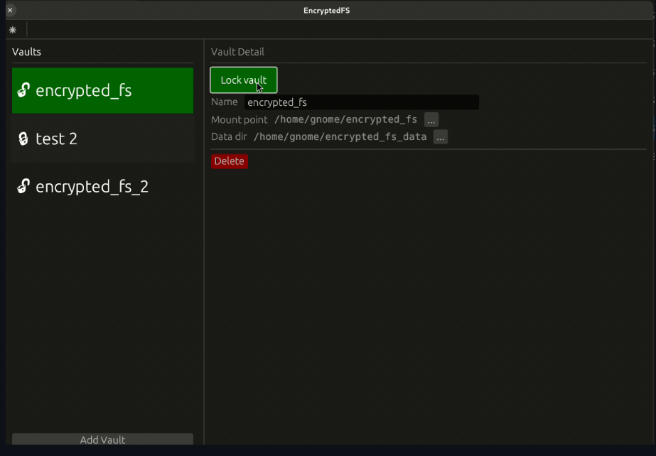
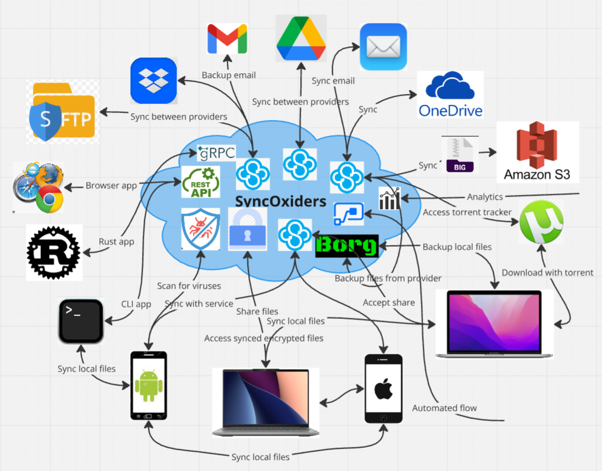
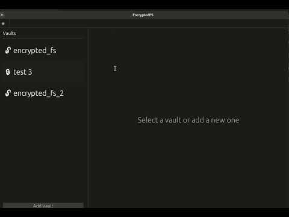
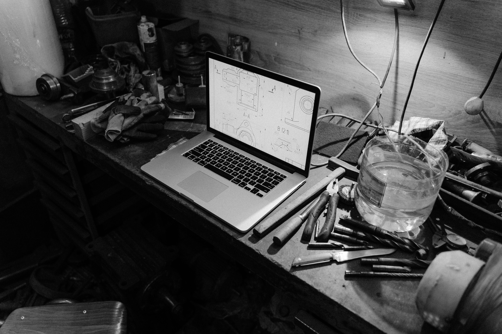

rencfs
An encrypted file system that is mounted with FUSE on Linux. It
allows you to create encrypted directories, enabling safe backups on
untrusted servers or cloud storage like Google Drive or Dropbox,
ensuring data integrity and privacy.
Learn More

rfs
A distributed filesystem written in Rust, designed as a learning and
experimental project for building such systems. It offers insights
into distributed computing principles and practical implementation
challenges.
Learn More

SyncOxiders
A cloud file and email sync, sharing, backup, and encryption
solution written in Rust, offering real-time sync between multiple
providers. It aims to simplify data management across platforms with
a focus on user security and reliability.
Learn More
rencfs-desktop
A GUI for rencfs, currently working on Linux, with future plans for
other platforms. It uses egui for GUI and tonic for gRPC
communication, aiming to enhance user experience through an
intuitive interface and seamless functionality.
Learn More
rencfs-daemon
An encrypted file system daemon in Rust that can be installed as a
systemd service, exposing a gRPC server for interaction. It is
designed for performance and security, providing a reliable
background service for encrypted file management.
Learn More

dbos
An operating system optimized for hosting database systems, designed
to run with minimal resources while executing workloads in kernel
space. It aims to provide efficient resource utilization and
performance for database applications.
Learn More

rencrypt-python
A Python encryption library implemented in Rust, supporting various
ciphers with optimized speed, particularly for small data chunks.
This library focuses on providing fast and secure encryption options
for Python developers.
Learn More
zeroize-python
A library for securely clearing secrets from memory, ensuring data
is zeroed using stable Rust primitives. It is crucial for protecting
sensitive information in memory and preventing data leaks.
Learn More
gdrive-rs
A GDrive client in Rust using fuse3 for easy integration with Google
Drive. It simplifies the process of accessing and managing Google
Drive files directly from the filesystem, enhancing productivity.
Learn More
rust-fuse3-template
A template for a Rust project using fuse3, with a basic
implementation of a filesystem. It serves as a starting point for
developers looking to build custom filesystem solutions in Rust.
Learn More
aws-lambda-axum-dynamodb-template
A template app utilizing AWS Lambda, axum, DynamoDB, API Gateway,
and CloudWatch. This template provides a solid foundation for
building serverless applications with Rust and AWS services.
Learn More
in-mem-fs
A basic implementation of an in-memory filesystem in Rust exposed
with FUSE on Linux. It allows developers to work with files in
memory, facilitating fast file operations without persistent storage
overhead.
Learn More
python-crypto-benchmark
A benchmark of multiple Python crypto libraries to compare
performance and efficiency. This project helps developers choose the
right libraries for their cryptographic needs based on empirical
data.
Learn More

action-check-version-changed-rust
A tool that checks if the version in Cargo.toml has changed since
the last run, useful for automating releases. It streamlines the
development process by ensuring version control best practices are
followed.
Learn More